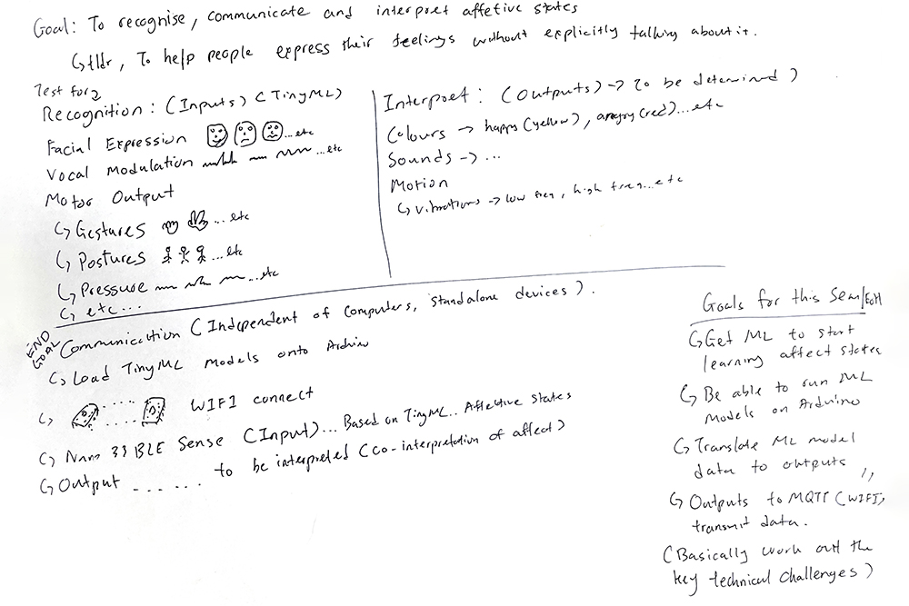

Semester One Week Eleven: 25.10.21 - 29.10.21
Dissertation:
// 26.10.21 - Consultation: Dissertation Introduction and Methodology with Vikas Kailankaje.
Graduation Project:
// 26.10.21 - Arduino + Machine Learning Exploration: TinyML using Teachable Machine and Arduino.
// 26.10.21 - Arduino + Machine Learning Exploration: TinyML using Tiny Motion Trainer and Arduino.
// 27.10.21 - Consultation: Graduation Project Game plan with Andreas Schlegel.
#S01W11 Appendices:
// SO1W11.A - Consultation: Dissertation Introduction and Methodology with Vikas Kailankaje.
// SO1W11.B - Consultation: Graduation Project Game plan with Andreas Schlegel.
// 26.10.21 - Consultation: Dissertation Introduction and Methodology with Vikas Kailankaje.
Refer to Appendix SO1W11.A for consultation transcript.
I think things are a lot clearer this consultation, especially since I broke down all the different sections clearly. And seems like things make sense, I just got to continue working on it. Vikas mentioned that I should include diagrams in the dissertation to help illustrate the ideas and methods and I think that would help too, but I always find myself struggling to break the words into diagrams for some reason (usually it'd be the other way around right?). But yeah I am kind of weird like that? But I'll try to work in the diagrams, might've been harder earlier cause I wasn't too sure what's happening too, but now with a clearer head I might be able to work something out for the next draft. I think it was really helpful advice to remember that not everything has to be in the dissertation, somethings could be left for further self exploration and other forms of executions so that's something to note for when the content becomes too much.
// End of this Section.
// 26.10.21 - Arduino + Machine Learning Exploration: TinyML using Teachable Machine and Arduino.
So I panic bought another Arduino Nano 33 BLE Sense, after I saw that it was going out of stock online everywhere from the official Arduino store to the retailers locally and overseas and they would not be back in stock till jan/feb next year. So I bought a second one, firstly as a back up device, can't just rely on one and hope that it doesn't break, too many aspects of my dissertation and graduation project rely on it, so it's always good to have a spare and well secondly because, if the goal is to have remote communication between two devices, I would kinda need two devices so might as well get one on standby now. But what's interesting about the one I bought now was that, the standalone devices were out of stock everywhere, so I had to get one that was included inside their Tiny Machine Learning Kit, which I managed to find a local seller who had some (it was also sold out on the Arduino store).
So what's interesting about this kit was that it came with a camera module that could be connected using the PCB they provided and it was also the recommended kit for edX course that I was taking, so there might be something fun to do there later on. But for now I was interested to see if it could work with the Teachable Machine's no-code image machine learning environment. I remember Joanne from last year playing around with it and I find it quite interesting so this could be something fun to experiment around with. Also, facial expression is one of the forms of recognising affective states that I was looking at experimenting with for dissertation so if I could get some experience with this it would be good. It would be even better if it works well with the Arduino Nano 33 BLE Sense (as shown in this google experiments project, Visual Alarm Clock that would open up a whole new bunch of possibilities for possible inputs.
To do that, google experiments has created Teachable Machine Embedded Models for use with such microcontrollers. My understanding of how it works is that there's a .ino sketch that is to be uploaded to the Arduino, then it connects to a processing sketch, which then links the images to Teachable Machine to train the model. I have embedded the two sketches needed to make this possible below for sharing and keeping track purposes, the first is the .ino sketch for the Arduino and the second is the .pde sketch that has to run in the background.
Image One: Peep the guest star (Andreas) who contributed to one of the libraries that makes this possible. Image Two: Testing the Camera.


Image One: Normal Face Images. Image Two: Smile Face Images.
The three instagram posts above shows the three different models each one trained with different amount of images. The first had 13 images, the second used the initial 13 and added 26 more images making it 39, images and the third one used the 39 images, but added another 100 images, making it 139 images. So I realised that the first model with 13 images, was very, very inaccurate especially when my eyes changed in sizes, which prompted me to add more images focusing on "opening" and "shrinking" my eyes. The second one wasn't too bad but I realised that it was not picking up the right face, when I turned slightly to the sides, so I trained the third model to recognise parts of the sides of the face as well. I did sort of like the setup for FaceID where i would turn from the left to right and in a circular motion to capture more parts of the face. As expected the more images, the more accurate. But something that got me quite curious about was that, could the inaccuracies be due to the resolution of the camera module? From what I know this camera module only had 0.3 megapixels, so was that a factor? Was the low pixel count unable to pick up on some of the more subtle muscle expressions or was it because it was only in black and white? The Teachable Machine Embedded Models for use with microcontrollers is only in black and white (to keep file sizes small and compatible with the Arduino), would that be a factor? It's probably something to note. There's another way to train models, but it would require some python code to convert the models to be compatible with the Arduino, might have to look into that when I have the chance to later on as well. For dissertation, it might be better to use the native camera in the laptop to test things out first, but im not sure if that's clashing with objectives of the dissertation, got some thinking to do regarding this. But at least it kind of works now.
Image: ERROR ERROR ERROR.
Ok things were going too smoothly there for a moment, disaster eventually and finally struck. The code would not upload to the arduino. There was some error and I spent like a whole day trying to troubleshoot it, but I couldn't find what's wrong, and like it's the code generated by Teachable Machine, with no edits, so it couldn't have been a mess up on my part. But eventually I did find a github issue where another user raised this bug to the developers, but it has not been answered, so for now I will be putting this on hold till I can find a way to resolve it or they've fixed the bug.
// End of this Section.
// 26.10.21 - Arduino + Machine Learning Exploration: TinyML using Tiny Motion Trainer and Arduino.
So after the Teachable Machine error code prevented me from further exploring that route, I went back to using the Tiny Motion Trainer, after messing around with it a bit (including during the cohort presentation), I thought it was time to start figuring out how the application of it. I decided to start with something simple, so a simple left and right motion and then trying to upload that to the Arduino, and then testing out how accurate it was running the model just on the device and not on the computer.
Image One: Data set for left gesture. Image Two: Data set for right gesture.
The data visualization graphs in the trainer doesn't actually show much information, besides just the line graphs, they do not identify, what do they signify and like what are the values. Although just by looking at them, I can sort of see that the Yellow line is likely the X-Axis Accelerometer and Blue Line is the X-Axis Gyrometer, as then in the "left" model you can see that it is below the middle line while on the "right" model it is above it. So in an effort to dive deeper into what actually going on with the trainer, I downloaded the CSV Data files to take a look at the raw numerical data, and they sort of confirmed my assumptions about the lines, although for the other colours I will have to do more tests to figure them out. But having access to the CSV Data File actually gave me a cool idea for the future, I could probably use those data to work out a data visualization visual in p5.js down the road, either as accompanying visuals for the project or just to make something that I could understand better. Also if there's some time over the next few weeks, one way I can figure out the lines, is to probably do a quick visualization with my own set of colours and maybe try to match the graph in the trainer and then overlay them to see what's what.
Image One: Training the Model. Image Two: Testing the Model.
After that was training the model, so after taking part of the edX TinyML course, I could understand what epochs were (the number of passes during the training, so 1 epoch = all the data passing once), The higher the epoch meant more passes which would train the model to be more accurate. If I recalled it right, I think it's recommended to do around 100 epochs? But it varies based on the amount of data, but I was curious about what if I did more, since the dataset was relatively small, I decided just to try 500 epochs for the "fun" of it. As seen in the graph, after the initial slight validation loss, it was fairly accurate all the way, and didn't really make much of a difference after the first few epochs. I was kind of expecting there to be more loss at the start, so maybe if I did more epochs it would correct itself? But I think due to the fairly simple dataset, the model was quite accurate from the start, so that was not very necessary? Well at least now I know though so that's good. From here I can probably adjust the number of epochs accordingly to suit the model that I was training. With the trained model, Tiny Motion Trainer provides a downloaded model that was programmed to work with the Arduino Nano 33 BLE Sense, just have to open the .ino file and upload it.
So with this it's proof that the models do run on the arduino devices, the code provided by the trainer just shows that it works, and as mentioned in the notes provided, it's not production ready so the next step from here would be to figure out how to turn the recognition of gestures into forms of output.
// End of this Section.
// 27.10.21 - Consultation: Graduation Project Game plan with Andreas Schlegel.
Image: The game plan that I hope I can execute.
I think it's about time I had a real plan to navigate the rest of the year before semester two begins. This semester has just been a lot of trying to figure things out and figuring out different technical challenges that I have to overcome and it's been quite overwhelming, there's just been a lot of trying out of different things and most of them not working out or being simplified till it kind of worked. But just so much time spent looking for tutorials, looking for documentation, changing a single value in the code to hope it works. Honestly it's been quite demotivating and tiring, I say I want to give up at least 20 times a day. But then somehow something would kinda work and pull me back in, (am I being gaslighted by code?). But I haven't had much opportunity to work on the narratives of the project and the whole interaction design part of things, even things about interfaces or creative outputs, it has just been one technological barrier after the other. I have kind of lost sight of the goals of the project. It's been a real struggle, when there are technical limitations in the way of things. So the plan now was to focus on overcoming all relevant technological barrier by this year, so that when school picks back up in January for Sem 2, I could purely focus on the creative design aspects of the project.
After having clearly define the structure of my dissertation's discussion I had some starting points to plan out what's needed to be done. So starting out to clearly define the goals of the project, from a technical standpoint that would be to recognise, communicate and interpret affective states remotely through physical computing devices, so the TLDR would be to make remote communication devices to help people express their feelings, without having to explicity mention how they feel. So it's a form of indirect communication? In a sense? But yes, I think the focus that I would like to keep is to help people communicate feelings. And to look at how feelings, something that can't be seen in a way, can be visualised and seen, heard, felt? To make it tangible? To find ways to interface feelings and emotions? To co-interpret the understanding of feelings.
Breaking the project in two main parts, The first is the input, recognition, so following the skeleton as described in the dissertation discussion. The first is Facial Expression, muscle expressions in the face that signify different feelings. The next is Vocal Modulation, the tonality in the way things are said. The last is Motor Output, which can be seen as Gestures, Postures, Pressure and other bodily motions. The next aspect is the outputs, the interpretation of feelings. So viewing affect as interaction, the co-interpretation of affect and how affect can be viewed as art. So the end goal of the project is to use those inputs to generate outputs through the use of standalone devices for effective affective communication.
So the goals for the rest of the semester/till the end of the year are:
1) Get Machine Learning platforms like Teachable Machine and Tiny Motion Trainer to recognise emotions (in-line with first portion of discussion for
dissertation).
2) Be able to run the Machine Learning models on the Arduino, building up to be able to build stand alone devices.
3) Translate those models into data that can be used for outputs.
4) Bring the data-to-output functions online to enable the remote communication aspects of the devices.
5) Experiment with some forms of outputs (in-line with second portion of discussion for dissertation).
6) Work out any other major technical challenges.
Refer to Appendix SO1W11.B for consultation transcript.
So after talking it through with Andreas, the advice was to slim things down and simplify things as it was quite a fair bit of work to be done, focus on finishing it task by task, completed one circuit, one function, one task, before moving on to the next one. Probably best to finish the one using gestures for now. Work on and gauge the fidelity of the each execution, make sure things don't fall apart, make sure the software works as intended, it just proves that it does work at a simple basic level. Focus on low fidelity. Don't take it as an engineering project but look at it from an interaction design standpoint. Looking online at samples especially from places like ECAL, these interaction design projects don't need to be super finished but just a working early stage prototype can have good documentation.
So the advice was to take that as a goal rather than thinking about finishing a product. Only then will one direction be counted as completed and then can maybe move on to another one. The same advice applies to the output aspect. Show proof of concepts not finished work. Use small experiments as reference or starting points and then get some feed back on them. Do not jump into the rabbit hole, design things quickly and then test them out and fine-tune them again later. Andreas also recommended that I really try to finish it and be satisfied with it and don't push it too far so that more time can be spent on the aesthetic, visuals, sounds, behaviour and packaging. So finishing it by the end of the year would be good. So the goal for the next few weeks is to get a working proof of concept and find a way to present it cleanly.
I understand what Andreas means by the low fidelity and the finishing of the project but I think where the struggle is now, firstly is working on the components that link with the dissertation, those parts I still have to try to work on it as they're integral to the dissertation, but I guess I could simplify it, so maybe for the inputs that link with the dissertation I can just focus on training the models and getting them to work on the computer, leave the uploading to Arduino part out of it for now. And as for the outputs I think I have a rough understanding of how to control them so I can start thinking about interaction design for those parts. The struggles now lay in the remote communication aspects of things, linking up the interfaces. That's where I see the biggest problems. Although I have sort of figured out MQTT-Protocols for sending information online. It's how I link the machine learning models to the data to be sent over that I forsee as my biggest hurdle at this point. I should also start looking at some materials and possible forms of interface, maybe get access to the workshop to be able to prototype some ideas using acrylic and wood.
// End of this Section.
// End of the Week.
// SO1W11.A - Consultation: Dissertation Introduction and Methodology with Vikas Kailankaje.
Matthew Lau
So I have roughly broken down the structure of the Introduction and I have expanded the Summary of Readings into a Literature Review and am about 70% done I think, but mainly I have broken down what I needed to expand on based on what I had left out of the RPO. I'm planning to add a paragraph on what are meaningful social interactions into the introduction once I can find a definition of it, but I think it would help the introduction in relation to affective states. I added a short paragraph to Research Objectives just to give a bit of background to how to research is positioned. I want to expand on the significance of research part. The literature review, the first part is on computer-mediated communication which was basically last year's literature review, I took sections from there to build upon, and move them around to condense them.
Vikas Kailankaje
Yes that's fine, that's the whole of point of the lit review. I think most students in this class were able to take what they did in BA2 and build on it. Some of them they borrowed a lot more but that's fine.
Matthew Lau
Ok, then I have this new section on emotions in HCI, so like mainly how are emotions measured and made. Then Affective Computing will be expanded to have some subsections, so Affect as an Informational Model, Sentic Modulation a way of measurement.
Vikas Kailankaje
Hmm like that would the word count exceed, (proceeds to check).
Matthew Lau
I think I will be around 1800-2000 words for the literature review, based on how it's going so far.
Vikas Kailankaje
It will be 5000-6000 words total so should be ok but your design primer would take some of the word count. Part of the reason we wanted to reduce the word count is because we wanted to shift to design-led research rather students doing a lot of literature reviews but not enough experimentation.
Matthew Lau
The the remainder of the literature review would be on Affective Presence. Ok so I'm not too sure on how to phrase this but Affective Presence is born out of Affective Computing but it's another approach/model. So Affective Computing is affect as an Informational model, so you take the information and assign it to a specific states, so like smile equals happy. Whereas Affective Presence, is based on interaction and like co-interaction of affect, so for example we bump fist then it's like yeah friends happy, more performative. So the main discussion of the dissertation is Affect as Information and Affect as Interaction and to see how they come together in a way, cause I think the goal is to use Affect as Information to recognise, but then through communication it's output as Affect as Interaction to be interpreted. So let's say the machine detects that I'm angry, I slam the table or something, then it'll output something more interpretive, so that the other person can judge based on our co-interpreted meaning and say oh that's anger or something.
Vikas Kailankaje
Hmm ok so it makes sense, oh so actually when you get down to dissertation, you can also include diagrams, what you just described can be in a diagram, even if it's like a flow-chart kind of diagram, a network diagram, they might also be non-hierarchical, so example of a hierarchical chart would be organisation chart, ceo, and etc, but this could be a non-hierarchical chart that just shows how things ping pong across and how this bit if I were you, I have the diagram and as I'm explaining I refer back to the diagram, and have parts where it's just illustration and then numbered. Of course one of the nice things that you've described is that it's not sort of the older information theory where it's coding, decoding, this is a bit more complicated than that, as what sort of adds to that layer is that there some bodily sensations and things like body posture, gesture, pressure. Along the way also try to manage expectations "Affect as Art and Design", even if it's a placeholder try not to be too grand.
Matthew Lau
Yeah that's just like a point of view of the concept, where you can sort of tweak and adjust the creative output so like is it just a light or something else?
Vikas Kailankaje
Yeah I know, but it's like saying architecture is art and science...by the time you spent 5 years studying you're like uhm i just want to cry its so hard. But let's say if it's to do with co-interpretation or co-construction or however you proceed with it, if that's the focus that's fine. If there are bigger implications to it, you can leave out of the paper, it's something you're interested in and if you approach it like how research approaches it, it could be further things you do, you might want to do a little chap book or something then riso print it as a manifesto or something that'd be cool. So all I'm saying is that you don't have to eat everything at the same table.
Matthew Lau
Ok so back to methods right, so if it's co-interpretation then I'm self-testing co-interpretation, that doesn't really add up? Cause I can't co-interpreted just by myself.
Vikas Kailankaje
You can get people to join, you need a collaborator, you could use just one person or a different person for each experiment.
Matthew Lau
Yeah I got the feedback on the methods, and yeah it's a bit muddled but I was stuck trying to fit the word count, but yeah I broke them down into different sections and it should be better now.
Vikas Kailankaje
Mhmm yeah actually this one looks a lot more organised but it's ok, RPO is done you have to go on. And also depends on what you're focusing on, so some students were focused on the tools but some were focusing on the use-cases, where can I find this working, and where can I think about initial testing areas for this application.
Matthew Lau
Ok so that's where I'm at now, is it ok for the draft to stop at the Introduction and Methodology, doesn't have to move on to discussion yet.
Vikas Kailankaje
Yeah, but if there are students that have moved on that's a bonus, but to me don't rush, you have a good pace now, so I can see let's say you start writing discussion only in late december, early january that's still ok.
Matthew Lau
Yeah so I've also changed the method that you said was wrong in the RPO feedback. Cause I remember showing the draft and you didn't say anything about it, then suddenly the feedback then I was like uhhh...
Vikas Kailankaje
Was it something about precedent studies, yeah the reason precedent studies is powerful is because you're studying it at a scale that is comfortable for you and you manage the complexity and you can augment it but you have a point of reference, so even when you discuss it in the discussion section, there'a point of reference and you can explain what you changed, and you can also explain what your focus is. You need to reserve room for that, maybe in the RPO it was a bit more compact but now you can explain in short paragraphs like this is the method, this is the mindset then tools, yeah that makes sense.
// End of Appendix A.
// SO1W11.B - Consultation: Graduation Project Game Plan with Andreas Schlegel.
Andreas Schlegel
Ok so for five minutes, just tell me what you have been working on, how you want to move on from here and we can also take a look at status of your practical work and the documentation if you have any. So basically tell me what you have and what issues you are facing.
Matthew Lau
Ok so this is my game plan, ok so I have been figuring out the recognition part of things, so I am using machine learning to work out the recognition of feelings. But I just started on it cause my parts just arrived.
Andreas Schlegel
Ok so yor work is about expressing feelings through interactive interfaces? or how would you call it. How would you frame it, if you had a package with all your work inside what would you call it. How would you label it. Keep it general and not too technical so that people can understand.
Matthew Lau
So the input is based on recognition, so expressing feelings through , not interactive interfaces but through a device, a device that helps people express their feelings without explicitly telling them how they feel. So they would run machine learning models that can recognise your feelings that can remotely communicate it with someone else. Ok so the next part is the output, so it's the interpretation so what's different about my work from my case studies is the first part, the recognition, where the rest is mainly focusing on the co-interpretation of feelings, but this device would recognise then it can lead to being interpreted. The output wise, I haven't really thought of how it will look or feel, but I would like to focus on the first part, the recognition cause that's where the struggles are and it also ties in with the dissertation.
Andreas Schlegel
When you say struggles what does that mean? Technical?
Matthew Lau
Yes technical, but I'm still trying to figure things out and it's slowly starting to work so there would be progress on that over the next few weeks, for the output there isn't a fixed thing, but I have to do some test and see how people co-interpret feelings.
Andreas Schlegel
Does that mean you don't have an idea yet? Or?
Matthew Lau
Well I have a few different ideas so far, I mean colours and light could be one, sound could be one, motion or vibration, need to see how that would work.
Andreas Schlegel
Ok so what I'm suggesting is, in parallel to continuing working on your technical set up, what I would recommend is to focus on what you have developed over the last weeks. So I think there's a lot of work here on this piece of paper, I would recommend to slim it down a bit and at least get one working and when you accomplish that, then you move on to the next one. I don't think it's wise to go and work on three different ideas at once, So my suggestion would be to finish one first, I think the one with the finger the gestures is kind of working, and finish it, finishing here happens on different levels. One is the circuit itself, that it is clean and proper, meaning it doesn't fall apart, for example the breadboard situation you have, a simple way would be to glue down the wires. Why I am worried is that if you put this in a box, and take it out after awhile and the wires came off, it would be complicated to redo it. But I would recommend to finish one circuit on a technical level first. Then make sure that the software works as well, here working doesn't have to be perfect, but it suggests what your idea is about and it proves that it does it at a very simple basic level. So that doesn't mean that the fidelity has to be very high, focus on a low fidelity, if I do this, something happens...etc. Don't see this as an engineering project see it as an interaction design project maybe, and as you look around on the internet you will find a lot of interaction design projects that have a solid documentation. But the documentation is not based on a solid polished product but it's based on an early stage of a prototype or maybe a later stage prototype that does exactly what is seen in the video. Take this as a goal rather than a finished product. Why am I saying this, for you to move on to the next implementation you are basically going back to zero and doing everything over again just in a different direction, instead of gesture you're looking at posture. Have you finished your research and theory, is it in a good complete shape? Would it require a lot more time at this stage?
Matthew Lau
Yes, the theory I'm almost done, but the discussion part that requires the testing of the tech.
Andreas Schlegel
Ok so whatever you're doing here will help you to further develop your dissertation. You're not at the point where you're thinking that you might still change things. So whatever you're doing here feeds into your project. So let's focus on the discussion, the methodology and discussion.
Matthew Lau
Yes the dissertation and grad project explorations run in tandem and no I won't be changing anything else.
Andreas Schlegel
Yeah ok so for the output I would recommend the same thing, the interpretation, don't aim for a product, just aim for small experiments if you want to work with light then work with light, same for sound and motion. Here again it's not expected at this point there's no expectation in terms of the quality of what sound or colours, the expectation here is proof. Something happens here, something happens there, if this proof is done, move on to the next step. Fine-tune in tandem the input and output, or push the input aside and focus on the output, if you work with colours, how do you want to colours to respond, what are the behaviours that you're looking for, we've briefly mentioned this. If you just have a few pixels available the story becomes very different because you're not able to create something very visually complex, so you have to use light in a way that it speaks to an audience more through it's character and behaviour, and that's already a very big topic on it's own. For sounds, yesterday I saw this project by Pentagram, they're looking at the sounds of electric cars, they have these videos of adaptive electric engine sounds, there are 3 curves, a single sine wave but they accelerate in different curves. (Listen to sounds.) Three simple examples which do you find works.
Matthew Lau
I think the second or the third one, the first one starts out too loud.
Andreas Schlegel
Yeah see these are small experiments that maybe you can use as a reference or starting point to do some experiments with sound. With colour you can do the same things as well it's just the intensity of the light and you can get some feedback from your target audience, so maybe that can help prevent you from going too deep. If the focus is too much on the technicality the danger is that you might get lost in the rabbit hole. So just stay on the surface and avoid that altogether. So this is a good example of designing something very quickly and then getting feedback. Then you can fine-tune it again later.
Matthew Lau
Yeah so this was the plan was to be more simple and less technical in the interpretation part because the recognition part is a bit more technical but I think these are still manageable for now.
Andreas Schlegel
These plans are always great, and I think what is missing is the timeline, but actually it's not too bad.
Matthew Lau
I'm hoping to complete all these challenges by end of the year before the start of the next semester.
Andreas Schlegel
One thing not to underestimate, are you considering real time reaction response or delayed time reaction response.
Matthew Lau
Delayed time reaction response.
Andreas Schlegel
Ok then MQTT should work, so you've got it working so it's fine.
Matthew Lau
Yeah now it's just linking the MQTT to the rest of the project, cause I just found source codes that I'm digging through now, So i'm still trying to understand them and apply them.
Andreas Schlegel
I do know that these technical development always takes a really long time, and the more new stuff you find the more interesting it gets, so don't get trapped.
Matthew Lau
Yeah so I'm trying to pace this out over this year and completely all the technical stuff before next semester so that I can focus on the story, the narrative, the idea, the conceptual next semester.
Andreas Schlegel
Highly recommend that you really finish this and that you are also satisfied with what you have and don't really push that. So that more time can be spent on the aesthetic, not just the visual but also sound, behaviour, and the packaging. My recommendation is that you finish it by the end of the year, the technical implementation, one of them, for input I guess the gesture, then the output can maybe focus on two, the colour and sound, if you want to work with motion, some actuators, I would put that aside for now cause I think it would be easier to focus on colour and sound first as in my opinion, there is less work that you need to put in compared to something that involves motion cause you would have to build a robotic/kinetic object but colours you can just use an LED strip or speakers for sound. In terms of status do you think you're on track?
Matthew Lau
By my measures and goals yes.
Andreas Schlegel
My recommendation is to focus less on the fidelity, so maybe by week 13, I want to see something work. The input and output work. And I want to see that circuit are in in a cleaned up state, so it could be placed on a small acrylic or in a box or you can use glue or double sided tape or screws, whatever you think is the most convenient for you but also aesthetically the best solution so we don't have to deal with a circuit that's so exposed.
// End of Appendix B.